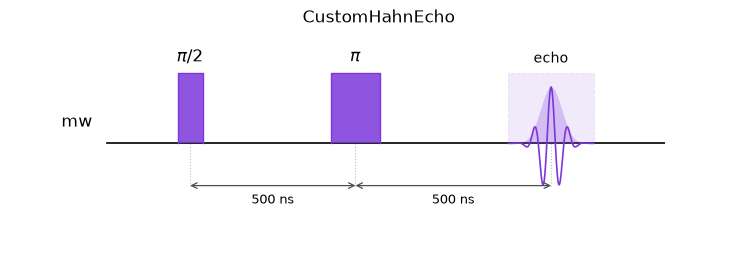

pyepr.Sequence¶
- class pyepr.Sequence(*, name, B, reptime, averages, shots, LO=None, freq=None, **kwargs)[source]¶
Represents an experimental pulse sequence.
Represents an experimental pulse sequence.
- Parameters:
- namestr
The name of this pulse sequence
- Bfloat
The magnetic field for this sequence in Gauss.
- freqfloat
The central frequency of this sequence. I.e. The frequnecy at which a zero offset pulse is at.
- reptimefloat
The shot repetition time in us.
- averagesint
The number of scans to be accumulated.
- shotsitn
The number of shots per point.
- LOfloat
The now deprecated local oscillator frequency. freq should be used.
Examples
A custom sequence can be built by adding pulses to an empty sequence.
import pyepr as epr import numpy as np epr.set_waveform_precision(1) seq = epr.Sequence( name="CustomHahnEcho", B=12000, freq=34, reptime=1e3, averages=1, shots=10) seq.addPulse(epr.RectPulse(t=0, tp=16, freq=0, flipangle=np.pi/2)) seq.addPulse(epr.RectPulse(t=500, tp=32, freq=0, flipangle=np.pi)) seq.addPulse(epr.Detection(t=1000, tp=512)) seq.draw()
(
Source code,png)
Attributes
- time: pyepr.classes.Parameter¶
The estimated run time of the sequence (HH:MM:SS), updated whenever the sequence changes.
- pcyc_vars: list[int]¶
The indices of the pulses that are phase cycled.
- pcyc_cycles: numpy.ndarray¶
The phase of each phase-cycled pulse for every step of the phase cycle.
- pcyc_dets: numpy.ndarray¶
The detection sign for every step of the phase cycle.
- pulses: list[pyepr.pulses.Pulse] = []¶
The list of pulses in this sequence.
- averages: pyepr.classes.Parameter¶
The number of averages (scans) to perform.
- shots: pyepr.classes.Parameter¶
The number of shots per point.
- name: str¶
The name of this pulse sequence.
- progTable: dict¶
The program table for this sequence, which is used to generate the pulse program. Has columns for EventID, Variable, axis, axID, uuid, and reduce.
- evo_params: list[pyepr.classes.Parameter] = []¶
The list of evolution parameters for this sequence, which are used to define the evolution axes of the sequence.
- property num_pulses: int¶
The number of pulses in this sequence.
- Return type:
int
- property seqtable_steps: int¶
The number of steps in the sequence table, which is the product of the number of phase cycle detections, the number of phase cycle variables, and the product of the dimensions of the evolution parameters.
- Return type:
int
- property shape: list[int]¶
Gives the shape of the sequence,excluding the number of shots.
- Returns:
- list
[nAvgs, axes_dims, nPcyc]
- Return type:
list[int]
Methods
- draw(**kwargs)[source]¶
Draws the sequence as an annotated matplotlib figure, showing pictorial representations of the pulses and delays in the sequence. Calls the draw_sequence function from the pyepr.plotting module.
- addPulse(pulse)[source]¶
Adds a pulse to the next position in the sequence.
- Parameters:
- pulsePulse
The object describing the pulse.
- evolution(params, reduce=[])[source]¶
Sets what parameters are being evolved in the sequence, and which are being automatically.
self.evo_params = params
- Parameters:
- paramslist
A list of Parameter objects which are being evolved. Each every entry in the list will be a new axis in the sequence. Only one parameter per axis should be specified.
- reducelist
A list of Parameter objects which are being reduced. These are the parameters which are being averaged over. These parameters should also be in the params list.
- Returns:
- progTabledict
A dictionary containing the progression of the sequence.
- adjust_step(waveform_precision)[source]¶
Adjust the step size of all axes and pulses to be an integer multiple of the waveform precision This is to ensure that the waveform is generated correctly by the specific AWG
- Parameters:
- waveform_precisionfloat
The precision of the waveform in ns
- shift_detfreq_to_zero()[source]¶
Shifts the detection frequency of all pulses to zero, by subtracting the detection frequency from all pulses and the sequence frequency.